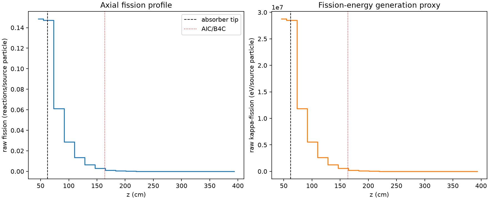
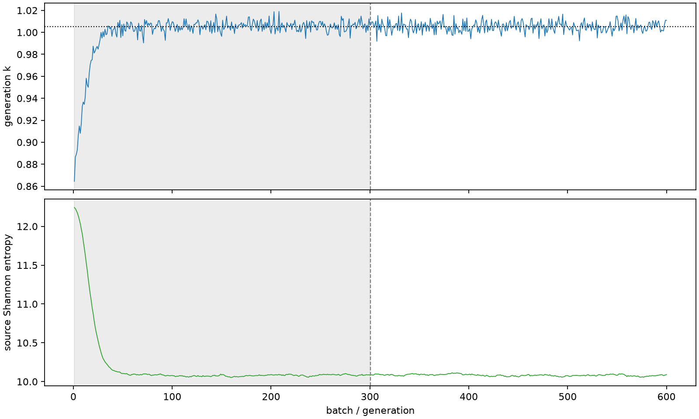

| field | value |
|---|---|
| experiment | V2-STAGE_256_OGRENCI_03-0016 |
| k | 1.0053724556278862 |
| MC standard error | 0.00018233875024314302 |
| seconds | 849.0364582059992 |
| acceptance | not_assessed |
| convergence | review_required |
Completed is output integrity only; physical and statistical review required. Zero tallies do not prove zero production or zero uncertainty.
| diagnostic | value |
|---|---|
| geometric fuel voxels | 5280 |
| zero fission tally voxels | 1380 |
| low signal fuel voxels | 2569 |
| low signal fission share | 0.00016413580932839487 |
| low signal kappa share | 0.0001641838417771662 |
| important fission share | 0.9500924010977178 |
| previous filter included | 2711 |
| duration estimate s | 1562.5173488400023 |
| actual minus estimate s | -713.4808906340031 |
| fission relative MC error | statistics |
|---|---|
| all_geometric_fuel | {"voxels": 5280, "positive_mean_voxels": 3900, "zero_mean_voxels": 1380, "undefined_relative_error_voxels": 1380, "median": 0.0522633932476471, "p95": 0.8877491613075158, "maximum": 1.0000000000000002} |
| low_signal | {"voxels": 2569, "positive_mean_voxels": 1189, "zero_mean_voxels": 1380, "undefined_relative_error_voxels": 1380, "median": 0.5185207389969004, "p95": 1.0, "maximum": 1.0000000000000002} |
| important_95pct | {"voxels": 1121, "positive_mean_voxels": 1121, "zero_mean_voxels": 0, "undefined_relative_error_voxels": 0, "median": 0.0065599527283004225, "p95": 0.013928249511491643, "maximum": 0.01707547131456882} |
| outside_previous_filter | {"voxels": 2569, "positive_mean_voxels": 1189, "zero_mean_voxels": 1380, "undefined_relative_error_voxels": 1380, "median": 0.5185207389969004, "p95": 1.0, "maximum": 1.0000000000000002} |
| kappa_fission relative MC error | statistics |
|---|---|
| all_geometric_fuel | {"voxels": 5280, "positive_mean_voxels": 3900, "zero_mean_voxels": 1380, "undefined_relative_error_voxels": 1380, "median": 0.052173737472679255, "p95": 0.8882626681265392, "maximum": 1.0000000000000002} |
| low_signal | {"voxels": 2569, "positive_mean_voxels": 1189, "zero_mean_voxels": 1380, "undefined_relative_error_voxels": 1380, "median": 0.5183068451484812, "p95": 1.0, "maximum": 1.0000000000000002} |
| important_95pct | {"voxels": 1121, "positive_mean_voxels": 1121, "zero_mean_voxels": 0, "undefined_relative_error_voxels": 0, "median": 0.006550538709501894, "p95": 0.013910446234650715, "maximum": 0.017054751954041363} |
| outside_previous_filter | {"voxels": 2569, "positive_mean_voxels": 1189, "zero_mean_voxels": 1380, "undefined_relative_error_voxels": 1380, "median": 0.5183068451484812, "p95": 1.0, "maximum": 1.0000000000000002} |
| axial bin | fission share | kappa-fission share |
|---|---|---|
| 1 | 0.362037788445161 | 0.36200090631617865 |
| 2 | 0.35927793780968226 | 0.3592736561790522 |
| 3 | 0.14926356872243074 | 0.14928508802720594 |
| 4 | 0.06999033302485777 | 0.07000066556407179 |
| 5 | 0.03291560502726646 | 0.032920557936472625 |
| 6 | 0.01547542052487745 | 0.015477773881354353 |
| 7 | 0.006976143889267481 | 0.006977162882402034 |
| 8 | 0.0025523893181143547 | 0.0025529811958574697 |
| 9 | 0.0009498205194669313 | 0.0009500577273448321 |
| 10 | 0.0003611298922043194 | 0.0003612240225164197 |
| 11 | 0.00013536835711300613 | 0.00013540727488293546 |
| 12 | 4.667974887654086e-05 | 4.669379668858209e-05 |
| 13 | 1.2585004941478108e-05 | 1.2593263440121186e-05 |
| 14 | 4.500480093891397e-06 | 4.502380785237131e-06 |
| 15 | 6.321638278950278e-07 | 6.324606822657345e-07 |
| 16 | 8.980635726616859e-08 | 8.98357286887035e-08 |
| 17 | 7.265461049982264e-09 | 7.25533576004555e-09 |
| 18 | 0.0 | 0.0 |
| 19 | 0.0 | 0.0 |
| 20 | 0.0 | 0.0 |
Histories include the inactive-to-active transition at batch 300. kappa-fission approximates fission energy production, not total heat deposition.

